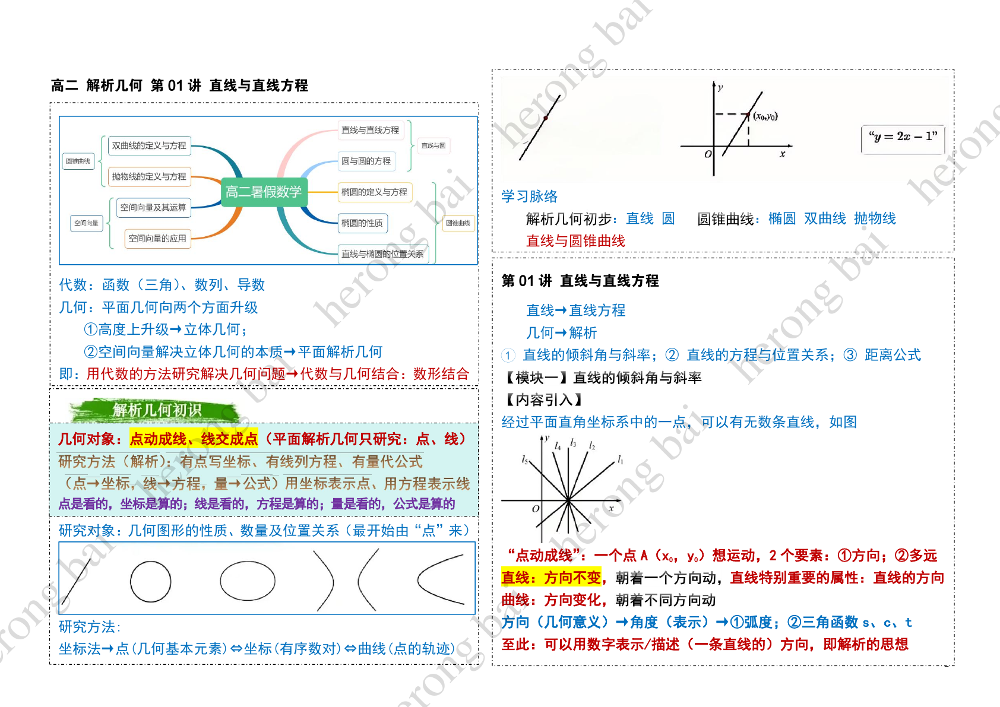

ORIGINAL LEARNING NOTES
Analytic Geometry
78 pages · Chinese original · Herong Bai
Page 1 / 78

Tap the page to view it at full size.
ORIGINAL LEARNING NOTES
78 pages · Chinese original · Herong Bai

Tap the page to view it at full size.